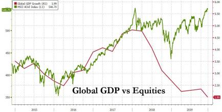
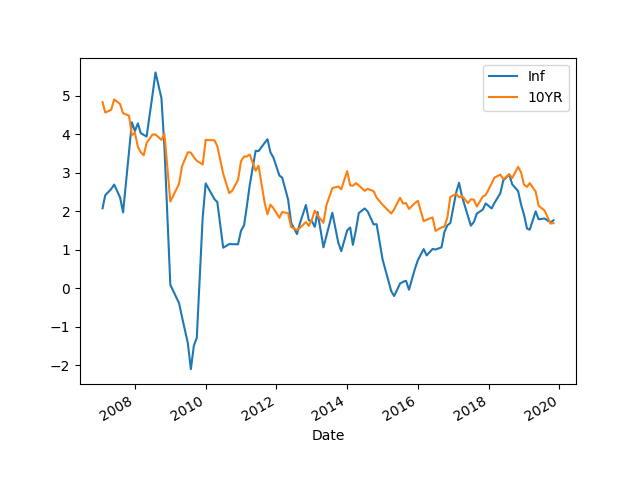

Week 49
What the establishment used to say about our ideas:
— Bernie Sanders (@BernieSanders) December 4, 2019
Raising the minimum wage to a living wage—too radical.
Guaranteeing health care to all—too radical.
Aggressively combating climate change—too radical.
Not having a super PAC—too radical.
None of these are "radical" anymore.
Scientists have just announced the first discoveries from #ParkerSolarProbe’s daring mission to the Sun. What they’ve learned has changed our understanding of the way the Sun releases material and particles, influencing Earth and the entire solar system: https://t.co/3WFfZStojM pic.twitter.com/Q3BZAV7lrT
— NASA Sun & Space (@NASASun) December 4, 2019
"Groupe Michelin has formed a joint venture with Faurecia to develop and market hydrogen fuel cell systems for light vehicles and commercial trucks"
@SkyeCity_
Number of people declared bankrupt due to medical bills each year:
Canada - 0
France - 0
The Netherlands - 0
Switzerland - 0
Japan - 0
Germany - 0
The US - 800,000
But which circle?
— Joshua Ulrich (@joshua_ulrich) December 4, 2019
👍
"China sanctions: US House passes bill over treatment of Uighurs"
"@JConafay
'Analysis tells you what you think of your design, building hardware tells you what the universe thinks about it.'"
What rubbish: "The EU has stood squarely against “science, innovation and technology” for decades" 🙄
— Mark McCaughrean (@markmccaughrean) November 16, 2019
Pure "rah rah British empire" propaganda from a clueless Tory with no science background.
FYI, the EU's Horizon Europe programme will have a budget of €94 billion over 7 yrs. https://t.co/YNbuu9HxxI
Oh yeah? Got a penchant for pa-kojj? Ok.
That's the French pronounciation for 'package' BTW 😆😆 Just kidding..
Bring It On - 77 El Deora #music
We have received a purchase order for two additional hydrogen fueling stations in Korea. Check out the press release for more info: https://t.co/ZwhHw4nhjh pic.twitter.com/FXQShKWpGe
— Nel Hydrogen (@nelhydrogen) December 4, 2019
M. Douglas on Gekko #wallstreet
Crazy. Some Gordon Gekko level shit.
Stoller, Goliath
"In 2001, one of the most important business historians of the twentieth century, Alfred Chandler, would note that this suit led to IBM’s decision to unbundle its software, and that decision “became and remained central to the evolution of the computer industry worldwide.” The suit, as Ed Black of the Computer and Communications Industry Association put it in 1997, also “signaled to both venture capitalists and key, talented individuals that they could, in fact, start new firms and not be stifled by Big Blue.” ...
The successes of the suit did not register among the new economists and antitrust lawyers trained in the Chicago School framework. They could no longer tell the difference between healthy markets and big companies, and chalked up the competition in the technology industry to nature, rather than antitrust policy. A mythos emerged around Silicon Valley, that a set of institutions built on democratic protection of the engineer and scientist from the monopolist was instead born from antigovernment garage tinkerers"
No need for an audiobook with its own sound file. @Voice Aloud Reader app can read a book, and voice it, works great with epub, mobi formats. I have it read with a Brit accent works great.
"Being in the moment" is okay as a temporary coping mechanism, but the larger issue is the modern structures being unsuitable for our needs. If the entire structure is pushing one into a frantic future preperation, there is only so much "being in the moment" u can do.
Asians 6% of US ..? Not all of that is Oriental; There are a lot of ppl with Indian origin.. Plus they r not a single block. A "Filipino" couldn't care less about what a "Korean", or "Japanese" might think (I put quotes bcz in US most would of them are probably already American)
"The New Zealand company behind a landmark trial of a four-day working week has declared it a success and will be adopting the new schedule full time"
Centrist is so confused: "but why are Reps blocking everything we do?". BECAUSE YOU ARE TRYING TO BE LIKE THEM you buffoon. No political party will sit idly by watching you supplant them. You think they are morons? (He doesn't, so he himself is a moron).
So trying to find that "common ground" triggers the exact opposite outcome.
Plug Power Selected by ENGIE to Deliver Refueling System for World’s Largest #Hydrogen-Powered Mine Truck-@PlugPowerInc to provide a custom refueling system for truck, which is set to begin operation next year-https://t.co/aTPTZQltmI #hydrogennow #fuelcell #zeroemissions pic.twitter.com/Lmt9PDZhYl
— FuelCellsWorks (@fuelcellsworks) December 3, 2019
Exactly. What I've been saying 4ever - showing steps the inventors went through for their discoveries is essential for teaching, especially to prospective researchers.
"Reacting to criticism concerning the lack of motivation in his writings, Gauss remarked that architects of great cathedrals do not obscure the beauty of their work by leaving the scaffolding in place after the construction has been completed. His philosophy epitomized the formal presentation and teaching of mathematics throughout the nineteenth and twentieth centuries, and it is still commonly found in mid-to-upper-level mathematics textbooks. The inherent efficiency and natural beauty of mathematics are compromised by straying too far from Gauss’s viewpoint. But, as with most things in life, appreciation is generally preceded by some understanding seasoned with a bit of maturity, and in mathematics this comes from seeing some of the scaffolding" -- Meyer, Matrix Analysis and Applied Linear Algebra

Ouch #hamilton #chapoTrapHouse
Spark Plug Rain - Profane Saints #music
PMI flat. Not good.
"@w_terrence
FACEBOOK IS THREATENING TO TAKE MY PAGE DOWN!
THIS IS NOT FAIR AT ALL!
So supporting President Trump is considered inauthentic behavior?"
They are our saviours. They can do whatever they want.
"As U.S. corporate jet use approaches pre-financial crisis levels and chief executives take an increasing number of personal trips on the company tab, many investors are being kept in the dark about the true cost of the perk"
Imagine the kind of world where W, a Republican, felt comfortable channeling Bill Clinton. These people turned US into a one-party state. No wonder they get along great with China!
Anyway.. "New Dems" were so uncomfortable in their own skin, more losses than wins were probably baked in. Same offering on econ issues, leaves you all this trivial, secondary stuff becoming hot topics of contention where Reps have the advantage.
BC definitely set the tone for the post Berlin Wall world - and not for the better. Dubya was 100% in Clinton-mold - that's how he presented himself (in an underhanded kind of way). His personality, 2000 positioning basically boiled down to "I'll give you Clinton, and there'll be less d#$k sucking in the Oval Office". Right? "Son of a President you see, I won't be as crass". That was the sales pitch. Southerner, check. Governor, check. About same age, check. With all that he managed to out-Clinton Gore, another Southerner, who thanks the worst campaign manager hired in decades, failed to show loyalty to the man who hired him, and lost the election during good times!
I remember a Clinton speech after 9/11 talking about data collection, by "(paraphrasing) making use of the kind of data the credit card companies already collect on us everyday". "Watch for patterns in the data, normal behaviour fine, outside the normal, up to no good". Well, when the primo fucko is saying all this stuff, why not go ahead and built the biggest spying network known to mankind? Which is what they did.
And remember the Clipper chip?
TV show Lost story telling was a bloody mess, but it also hit a nerve - we basically saw for five seasons people living in forager-like conditions - our hidden ideal. The one time they left the island, they were miserable, and they all had to go back. The modern life sucked.
Great to see fuel cells being used as emergency back up power for telephone towers in Germany https://t.co/MGhCyUFzpd #hydrogen #fuelcells #zeroemission #backuppower
— Intelligent Energy (@intellenergy) December 2, 2019
Yes, there is.
"There is no silver bullet in energy for combating climate change"
New study looks to biological enzymes as source of hydrogen fuel-University of Illinois & the University of California, Davis Researchers has chemists one step closer to recreating nature’s most efficient machinery for generating #hydrogen-https://t.co/RVqjV4ESF8 #hydrogennow pic.twitter.com/X5AitRuGxH
— FuelCellsWorks (@fuelcellsworks) December 2, 2019
Can plentiful fish create an agro-like environment (like harvesting, you can store, storage creates centralized ownership, hierarchy)?
Actually fishing, even during agro would create an foraging-like environment - go out to nature, get stuff, it's always there, you don't have to 'cultivate' it. See Ian Morris.
There are ways of handling the storage issue wout creating undue social structure. Plus storage doesn't create an exclusive food source, ppl can still go out and fish. American Indians hunted bisons, and stored excess food in the form of pemmican, and Indians remained an hunter-gatherer society.
Like I said, religion at its root is anti-establishment, against landed, mafia interests.
Donner also mentions archeologists can't find any traces for a "conquest".
"[T]he Prophet Muhammad he encountered a lot of opposition in his home community in Mecca, for one thing the meccans as many pagan societies tend to be engaged in a lot of sort of ancestor worship they tended to glorify their ancestors [and M said don't listen to them]" - How Islam Began, Fred Donner
Debt jubilee... Michael Hudson saz that constantly
"But in answer to your question, the end game is-- and the end game will be massively reflationary, will be the global debt jubilee. The global debt jubilee [as in] the monetary and fiscal authorities working together to print money. And that'll come from the G4 central banks-- the Fed, the ECB, the BOE, and the BOJ. And this is just right out of the Ben Bernanke-- what was Ben Bernanke's moniker? Ben Bernanke, before November 2002, was not called Helicopter Ben [as in dropping money out of helicopters]. But he was called Helicopter Ben after November 2002 because the famous 'What If' speech, "what if we got caught in this deflationary trap of the zero bond in interest rates?". ... But the Fed stopped short of the big bomb. And the big bomb is debt monetization. And so you're asking me what is it that's going to happen. We're going to eliminate, we're going to have a fire, a bond fire [nice, rhimes with bonfire], OK, and we're going to eliminate a lot of this debt through the transaction. ... so this is exactly what's going to happen at the end game, is the elimination of the biggest constraint"
I wonder if it can be done - completely isolating China behind something like Soviet Iron Curtain.. or hell, the Great Wall..
These ppl are already used to living in enclosed spaces, not exploring, just killing eachother in huge numbers.
"@Jkylebass
Study says Chinese government lies to the world about its murderous 'involuntary' organ 'donors'. 'The conclusion shows that very many people have died indescribably hideous deaths..' Why even engage with a regime this evil?! We need to decouple"
#enigma #tbtv
"A last way to calculate the size of the Free world is to look at the labor expended there. For instance, in 2008 Ohloh, a company that tracks the open source industry, listed 201,453 people currently working on a whopping 146,970 projects. That’s approximately the size of the GM workforce, which is a lot of people working for free, even if not full-time. Imagine if they were producing automobiles!" -- C. Anderson, Free
Hah - Moore's Law is actually Mead's Law
"As it happens, Gordon Moore did not coin the law named after him. The man who did, Caltech professor Carver Mead" - C. Anderson, Free
For math opt you would model the problem by hand (OMG!), construct an objective func, and find the optimal vals.
He also said "ML is very good at predicting the past". Hehe
"ML [makes] use of the past, while decision making, mathematical optimization [makes] use of the future" -- Lubecke
OR = Operations Research. Huge area - probably started with Dantzig, when he calculated optimal plane cargo loads for the famous Berlin Airlift.
Why do so many decision makers assume AI / ML is the best approach when OR might be?
— Les Servi (@lds123) November 26, 2019
New method for H2 generation from natgas
Hydrogen from Natural Gas Without CO2 Emissions--Methane is separated into gaseous #hydrogen and solid carbon that is a valuable material for various industry branches and can also be stored safely--https://t.co/hK1xEeLAnz #hydrogennow #decarbonise #zeroemission #SOLAR #fuelcell pic.twitter.com/JvWZCUTK9w
— FuelCellsWorks (@fuelcellsworks) December 1, 2019
100-200 meters!
"[Qualcomm] finds that mmWave networks will offer 96% of the coverage of the 4G networks if the 5G small cells are deployed at a range of around 100 meters to 200 meters apart, said Peter Carson, senior director of product marketing .."
Flaring/venting of natural gas in Permian Basin Texas & New Mexico reached new all-time high in third quarter 2019 averaging more than 750 million cubic feet per day according to preliminary analysis by Rystad Energy. EPA/Interior under Trump have cut rules limiting the practice pic.twitter.com/4iPNWf9Ddt
— Eric Lipton (@EricLiptonNYT) November 5, 2019
Higher freq means more, denser antenna placements. But higher freq could also fry ur effin brain #5G
Why do they always use the "remote surgery" example while explaining 5G? Cant u find anything more commonplace?
Or maybe 5G isnt really all that's cracked up to be, and they r having a hard time to shine the turd.
Wout proper insurance the patient would die anyway, before that spiffy robotic arm can do any good.
Reminder: Insurance is a 300 year old invention.
"@william_sw
Correct me if I m wrong but all electrolyser companies are either European or owned by European companies. Nel, ITM/Linde, AirLiquide/Hydrogenics, Siemens. Europe leads green #hydrogen"
London Bridge attacker has weird links. Looks like another one of those "not-so-smart bombs" cons deployed elsewhere, but gone rouge.
import quandl
df = quandl.get("RATEINF/INFLATION_USA-Inflation-YOY-USA",
returns="pandas",authtoken=open(".quandl").read())
dfi = df[(df.index > '2007-01-01')]
import pandas as pd, datetime
from pandas_datareader import data
today = datetime.datetime.now()
start=datetime.datetime(2007, 1, 1)
end=datetime.datetime(today.year, today.month, today.day)
cols = ['DGS10']
dft = data.DataReader(cols, 'fred', start, end)
dfi['t'] = dft
dfi.columns = ['Inf','10YR']
dfi = dfi.dropna()
dfi.plot()
plt.savefig('inf10yr.png')

YoY inflation 1.76, T10YR at 1.72.
"Aaww but we are in debt yields gonna blow!" Not happening (yet). The biggest risk for bonds is inflation risk (principal, coupons are paid, guaranteed, but if money is worth less, problem). HOWEVER if USD is dropped as world's reserve curr, massive debt monetization, then there might be inflation - but this event is hard to predict. Might as well make some $ until it happens.
"@ConsensusExiled
Liberal centrism, an amorphous mass of ideologies enslaved by markets, profits and neoliberal capitalism, is useful only to delay the descent to bare fascism — a preferred outcome to socialism for the materially privileged."
I hear you, but it is still a useful gauge. It measures most transactions after all. So if it is accelerating, it might not mean all is well, but if it is decelerating, then u can be sure things are very bad.
"GDP is old-fashioned, useless ..."
"@peterdaou
DEFEND THE STATUS QUO.
DEFEND THE ESTABLISHMENT.
If it makes you feel good.
I won't.
I can't.
I refuse to keep doing the same thing and expecting a different result.
Time for a political revolution"
Tetris in Emacs on Termux on a Samsung. I've reached Walhalla.
What happens once the last Bitcoin is mined? What incentive will miners have to have their servers up to process transactions? Transaction fees could be one, but by then off-chain solutions like Lightning would be propagating txns through completely different network structure, not through miners, than not much txn $$ would be coming their way.
It will be weird. The whole proof-of-work and limited # of coins thing is odd (and deflationary, like gold).
Finney was not a great systems designer. He knew crypto, but I don't think he was great on scale, computing horse power etc. Time for change - clean slate.
Hal Finney diagnosed with ALS in 2009. Satoshi posted last message on Bitcointalk forum Dec 2010. So Finney (Satoshi) came to terms w illness, tidied up work and pulled himself out of the community.
Satoshi would have come forward by now, if he could. He can't because he is dead.
German gas industry targets 5 GW of power-to-gas (electricity to H2) capacity in five years .. 40 GW by 2050. #energytwitter it is ok to say with confidence that Green Hydrogen is coming. Molecules bring value to deep decarbonization and engage incumbents https://t.co/EVM3LMEzm0
— Garry Golden (@garrygolden) November 30, 2019
Nano crypto looks good. Everyone has their own blockchain. No mining.
The UK's oddest place names.
{kind=link}
True. Related
"Many progressive European societies have policies that replicate hunter-gatherer parenting values by assuring community support for parents via generous maternity and paternity leave, subsidized medical and child care, and free education.
Parents in the United States and other societies less aligned with the deeply human, communal values are struggling—not because they are bad parents, but because their culture places wildly unrealistic demands and expectations on them, abandoning them when they most need help"
#civilizedToDeath
Is Trump a closet liberterian? Penchant for gold, check. Spending worries (which he does nothing about, but great lip service), check. Libertard friend (Thiel), check. Libertard pol supporter (Rand Paul), check. Tea Party connection (Palin, Pence), check.
Note: Most ppl don't know Pence is a huge TP-head. He keeps saying "I was Tea Party before there was a Tea Party"
Go help bankrupt another news outlet, you'll feel better.
"Peter Thiel Sued Over Landslide That Damaged Neighbor's Home"
Not a douche anymore 👍
This guy is a former Hillary advisor BTW.
How messed up is our system, you ask?
— Peter Daou (@peterdaou) November 29, 2019
NO TOLERANCE FOR:
Universal healthcare.
Dignity at work.
Affordable housing/education.
Clean environment.
UNLIMITED TOLERANCE FOR:
Bloated military budget.
Tax breaks for billionaires.
Flooding the country with guns.
Kidnapping children.
😆😆😂😂
"Many Boomers were thus quick to take offense [at the OK Boomer meme] since taking offense is now a preapproved response to any set of circumstances at any time. One Boomer even objected to the plain word Boomer, calling it the 'N-word of ageism.' Once again, Boomers are getting ahead of themselves"
Chimpanzee is not our ancestor. We did not descend from chimps, we descended from something already looking like human, chimps evolved from that as well.
Stupidest thing I've ever heard... If Brits had US mentality on guns, the attacker would be armed with AR-15, he'd not only kill more ppl he'd hold off the entire police force with extreme firepower.
"@DavidWohl
Takeaway from #LondonBridge incident: If law-abiding Londoners could carry firearms legally, it probably wouldn't have happened"
I worked for a consulting firm who did a project for Enron. Our project was similar so we asked to see their C++ code. Now whenever I hear abt Enron remember that code. Indentation meh. Boilerplate level ok. No visible shananigans, but of course they must have been somewhere else.
"~70% retail still takes place offline"
"@Keubiko
China EV sales imploding on back of subsidy cut. down 45% YoY in Oct. Government mulling over cutting the remaining subsidy - one of the policy objectives is to cull the herd of hundreds of EV makers that have sprung up. Tesla is walking into a knife fight"
Netherlands #HEAVENN #hydrogen project receives €20m grant from EU funding and €70m of public and private co-funding through The Fuel Cells and Hydrogen Joint Undertaking (@fch_ju ) #H2View #decarbonise #hydrogennow #fuelcells https://t.co/czhXTP6K30
— H2 View (@h2_view) November 29, 2019
"@Cgnewday
Fossil fuels are completely unnecessary, the only ones that don’t think so are the sociopathic 1%’ers that own them and their sociopathic lobby groups they fund"
"@jeremycorbyn
The billionaire owner of the Daily Mail, the Viscount Rothermere, has bought @theipaper.
Two billionaire press barons now own half of the top 10 daily newspapers.
Remember this when they attack Labour's plan to make the super-rich pay their fair share"
Different..? Let's see 🙄 .. Limited number of people with British origin on a huge landmass.
That's like, Australia! Which has free healthcare, and gun control.
What is different about US is the way its politicians have been the victim of corporate capture. The war between public and private resulted with the public losing. Yes that particular war was probably more intense in US bcz it is the seat of the empire, empire as in the military-industrial complex Eisenhower warned about.
(Plus centrist middle meddling meager medians try so hard to become like Republicans, this pushes Reps to extreme, making them intractable on issues that could be solved easily)
"But US is a huge country, so the dynamics to survive on it made them different, that's why they have to have guns, and healthcare cannot be free"
From Navarro's book Death by China,
[The] process begins when you or I walk into a store like Walmart and buy a Chinese product, after which our dollars are shipped overseas. At this point, to maintain the U.S. dollar’s fixed peg to the yuan, China must promptly recycle our “Walmart dollars” back into the United States by buying financial assets such as U.S. government bonds, U.S. real estate, or U.S. companies; otherwise, upward pressures would build on the yuan. ...
Before the Chinese government can recycle any of our Walmart dollars, it must gain control of those dollars from the Chinese exporters that accumulated them. This requires a convoluted process known as sterilization.
To sterilize our Walmart dollars, the Chinese government forces its exporters to buy Chinese government bonds denominated in U.S. dollars. In return for surrendering their greenbacks, exporters then receive about 4% interest on the sterilization bonds. The Chinese government then turns around and reinvests the captured sterilized greenbacks back into U.S. government bonds that pay less than 2% interest. China thereby loses 2% or more in interest on every dollar it sterilizes—and the losses run into the billions!
Just why is the Chinese central bank willing to shoulder such huge losses? It is because the Communist Party is far more interested in creating jobs to maintain political stability
This creates distortion in the exchange rate.
Dollar reserves built up throughout the world to combat currency attacks, act similarly.
Also selling debt can allow a country to recycle old debt with new debt, allowing it to obtain dollars, covering up the real value of a currency = distortion.
The old model is broken in many ways. We need a new system.
"Why aren't exchange rates adjusting themselves automatically according to trade deficits?"
H2 comes from Brunei’s hydrogenation plant which converts LNG into H2.
It is liquified and is transported, to be used in turbines in Japan that generate electricity.
👍 Fossil converted into clean transportable energy at the source.
"@AWeigmannn
Brunei has begun exporting hydrogen, with the first shipment targeted to reach Japan’s city of Kawasaki on December 15"
H2 is spreading the way new, solid tech should - slow but surely, and organically.
More renewable hydrogen projects for industry are being announced each week. https://t.co/IENS6OdOxw#powertogas #hydrogen
— Keith Malone (@ANativeAngeleno) November 28, 2019
"Nissan Motor Co. is introducing a new, higher-tech production system globally to try to boost efficiency as it looks to reverse a slide in profitability.
The updated equipment and other technologies, which include increased automation"
The so-called #ShiaCrescent has a big hole in it.The insular, atavistic & cruel theocracy in #Tehran & its proxies in #Iraq & #Lebanon are in denial of the tectonic changes under their feet.The symbolism of burning #Iran's consulate in #Najaf is immense https://t.co/RbaqAS2mJg
— Hisham Melhem (@hisham_melhem) November 28, 2019
"Would ppl buy goods with their UBI from the companies in bad shape, helping them stay afloat?". Maybe. And maybe not. Trusting ppl with those dollars is still a better idea tho rather than coddling overextended companies.
So maybe a special UBI that kicks in during downturns, it can be keyed off a particular macro parameter, say GDP deceleration for two consecutive quarters.
"Government increasing spending during downturns" is a really, really stupid idea - as in spending that'll help businesses to stay afloat. They even had the left go along with this shit (bcz biz would not fire workers if they were held afloat). Downturn is nature's way of telling overextended businesses to trim down or die the fuck off. If that process is artificially hampered, than we end up with zombies, who cannot grow but can keep limpin around also thanks to low rates, who would not hire more workers anyway, or increase wages.
During downturns help needs to go to people not to companies. People might get laid off from overextended companies which is bad, so help them directly, not to the companies.
Science is still in its dark ages. Most papers still do not share data and code. Clearly journals are not beacons of progress, if they were, they'd make it mandatory to get a Jupyter notebook, or at least downloadable file and code along each paper they receive for review / publication.
Gov is slippin, they should make it mandatory for data / code to be shared as part of their grant process.
And that is only for starters - I have an idea to force all math to be verifiable through an automatic theorem prover, but that is too crazy for now. I'd settle for data and code.